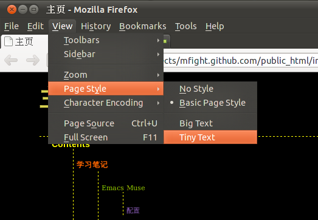

Last Updated: August 19, 2011

曾经用emacs muse搞过wiki。不过都是黑白的。偶然看到十五的“危机”，不由惊叹，原来wiki还可以这么漂亮。于是毫不犹豫就把样式照抄了过来，在此对十五表示感谢。下面的话同样摘自十五的“危机”, 用它和大家共勉。
俗话说：
“好记性，不如烂笔头！”
经常遇到这样的情况，几天前刚查过用过的Tips，今天想用但不记得了。而且，自己也比较懒，很久都没动笔写过东西。即使是偶尔在本子上的涂鸦，过后也几乎很少翻出来看，更别说整理了。有鉴于此，遂决定要经常记记笔记。花了几天时间，配置好了Emacs Muse和主页的css，以后写的东西就可以直接生成网页发布或存档，回头亦可以方便的浏览、更正和回顾。也希望能对他人也有所借鉴。
人只有有了“危机”（维基），才能不断地去进取！
在学习meego-app-tasks时看到有使用QExplicitlySharedDataPointer，很长的名字啊。查了一下它的作用。Qt的文档这样写：
This means that QExplicitlySharedDataPointers behave like regular C++ pointers, except that by doing reference counting and not deleting the shared data object until the reference count is 0, they avoid the dangling pointer problem.
原来，这就是一个对动态申请对象的指针的计数器，当计数器到0时， 共享的数据对象所申请的空间就被释放了。
那么，QExplicitlySharedDataPointer与_QSharedDataPointer有什么不同呢？在对某个共享数据指针进行写操作的时候，这个写操作应该作用到所有指针上，还是那个进行了操作的指针呢？对QExplicitlySharedDataPointer对象的写操作，将作用到所有的指针上。而QSharedDataPointer在计数器多余1的情况下，将自动生成一个副本。如果QExplicitlySharedDataPointer在某次操作时也想达到这个效果，可以在写操作前调用detach()方法。
如：
<link rel="stylesheet" type="text/css" href="sheet.css" title="default">其中
rel是relationship的缩写，指的是链接与html文档本身的关系，“stylesheet”说明这是一个stylesheet。type指的是stylesheet的类型。作为一个菜鸟，我只知道css。现在使用的可能有别的风格类型，当然以后可能也会产生和流行新的风格类型。href指的是具体链接的文件，我们这里用的是相对路径。
对于title属性，可能并不常用。我们可以为html页面增加不同的stylesheet，让用户选择页面的风格。比如：
<link rel="stylesheet" type="text/css" href="sheet1.css" title="Default" /> <link rel = "alternate stylesheet" type="text/css" href="bigtext.css" title="Big Text" /> <link rel = "alternate stylesheet" type="text/css" href="tinytext.css" title="Tiny Text" />注意到，除了默认的风格，其余两个风格的类型应写为
"alternate stylesheet"。
我们来看看在浏览器中的效果。

还不错哦。
一般来说，用git rm就能把文件从目录中删除，同时从git的object tree中删除。但是，如果之前已经通过窗口或是别的方法，删除了文件，还需要用git rm来把文件一个个删除吗？完全不用，可以用这条命令。
git add -u这条命令的作用是更新已经在object tree里的内容，而不会加入新的文件。同时那些被删除的文件也会从object tree中删除，是不是很好用呢？
由于wiki架设在github的repository上，只能够是静态的，没有办法加入回复的功能。如果有什么疑问或者建议，欢迎和我交流。可以发邮件给我wenhao.sng@gmail.com， 也可以加我qq：570660586。